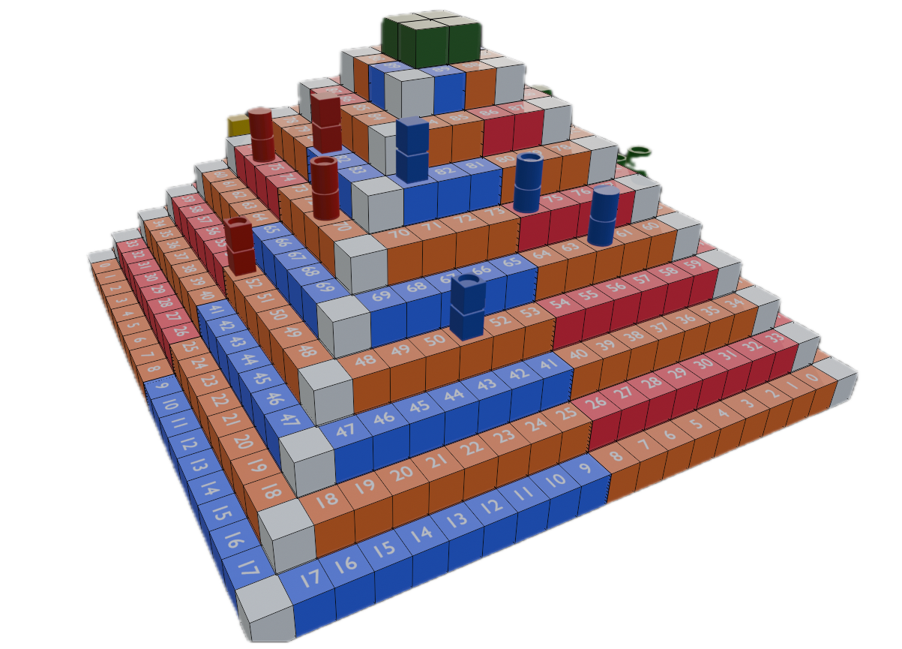

Projet Torikoblox
Le projet « Torikoblox » (nom temporaire) est un projet en cours de réalisation que j’ai depuis longtemps eu l’envie de réaliser avec mon frère. Le principe du jeu est simple, le joueur ou la joueuse sélectionne un personnage parmi l’univers du manga Toriko puis le joue lorsque la partie démarre. Il offrira plusieurs mode différents comme un mode chacun pour soi et un mode où les joueurs sont répartis dans deux équipes. Chaque personnage aura un style de jeu unique influencé par un certain nombre de techniques. ur ce projet je m’occupe essentiellement de la programmation, de la modélisation 3D et 2D et des effets spéciaux. Je réalise donc le modèle des personnages, des cartes, les différents effets des techniques et tout le code du jeu en m’aidant du forum des développeurs Roblox en cas de problème. Dans les images certains éléments sont susceptibles d’être changés et elles ne représentent donc pas une finalité.Système de combat
Pour attaquer le joueur doit vérrouiller un adversaire. Il peut ensuite soit réaliser des attaques "normales" qui consistent en une série d'attaques qui peuvent être bloquées.Il peut aussi réaliser des techniques plus puissantes et qui varient en fonction du personnage sélectionné. De plus le personnage peut esquiver et parer des attaques.
Chaque joueur dispose aussi d'une barre d'éveil qui permet d'entrer dans un mode spécial dépendent du personnage lorsque celle-ci est remplie. Les techniques disponibles changent alors pour des variantes plus puissantes.
Mécanique de rounds
Quand le joueur lance le jeu il est envoyé dans un "lobby" qui représente l'accueil. C'est ici qu'il a accès à la boutique, au menu et à son inventaire.Il doit attendre qu'un "round" ou une partie démarre pour jouer ce qui le téléporte alors vers l'une des multiples cartes du jeu.
Mécanique de sélection et d'accumulation de personnages
La première fois qu'il lance le jeu le joueur doit sélectionner un personnage parmis quatre. Une fois la sélection faite il débloque le personnage sélectionné et peut alors en débloquer d'autres dans la boutique et ensuite choisir celui qu'il souhaite jouer dans son inventaire.Concept de jeu de société "Ascencion au Panthéon"
Ascension au Panthéon est un jeu de dés, combinant adresse et chance, qui consiste à faire l’ascension d’une pyramide pour rejoindre le Panthéon divin. Chaque joueur joue un personnage qui aspire à devenir un dieu et qui doit pour cela surpasser ses adversaires lors d’un parcours comportant une série de duels. Il doit faire atteindre le sommet de la pyramide, le Panthéon, à ses 4 acolytes. Chaque acolyte possède un talent particulier et c’est en utilisant le bon acolyte dans la bonne situation que le joueur augmentera ses chances de faire parvenir en premier tous ses acolytes au sommet de la pyramide.Informations
Nombre de joueurs : 4Durée d’une partie : 30-40 min.
Âge conseillé : à partir de 8 ans.

Matériel
Une pyramide de 10 marches, dont le sommet, et de 108 cases numérotées, le sommet étant alors la 109e case.

Règles du jeu
Mise en place
Chaque joueur choisit une couleur et prend les 4 acolytes de cette couleur. Chaque joueur lance ensuite les 3 dés et fait la somme des valeurs obtenues. Le joueur qui a le score le plus haut commence la partie. Le joueur avec le deuxième score le plus haut s’assoit à la gauche du premier et jouera en deuxième, sur la face de la pyramide qui se trouve à gauche de celle du premier joueur. Et ainsi de suite. En cas d’égalité entre deux ou plusieurs joueurs, ces joueurs doivent refaire un jet de 3 dés pour se départager.Talents des acolytes
Déroulement d’un tour de jeu
1. Déplacements
Le premier joueur lance 2 dés et fait la somme des valeurs obtenues ce qui lui indique le nombre de cases qu’un de ses acolytes pourra parcourir sur la face de sa pyramide, en commençant par la case 1⃣ et en avançant dans le sens de la numérotation (de gauche à droite sur la 1re marche, de droite à gauche sur la 2e marche, et ainsi de suite).Attention : il ne peut y avoir qu'un acolyte sur la même case. Si le score indique qu’un acolyte doit rejoindre une case occupée, il devra s’arrêter avant cette case. Selon la situation, il choisit l’acolyte qui lui semble le plus judicieux.
Attention : s’il choisit l’acolyte rapide (R), il a droit de lancer un dé supplémentaire ce qui lui permet d’augmenter le nombre de cases que son acolyte pourra parcourir. Pour envoyer un acolyte sur la case verte sommet, la 109e case, il est nécessaire de faire un score de dés égal ou supérieur au nombre de cases restant à parcourir. Le joueur suivant lance à son tour les 2 (ou 3) dés et déplace à son tour son acolyte sur sa face de pyramide.
2. Déclenchement des duels
Une fois effectués les déplacements d’un acolyte de chaque joueur, certaines situations conduisent au déclenchement de duels :3. Résolution des duels : Duel de puissance
Chaque joueur impliqué lance 2 dés, en fait la somme pour déterminer la puissance de son acolyte. L’ordre des lancers n’a pas d’importance.Attention : Un joueur qui a impliqué un acolyte fort (F) lance 3 dés au lieu de 2 pour déterminer sa puissance.
Attention : Un joueur qui a impliqué un acolyte chanceux (C) peut relancer le dé avec la plus faible valeur pour déterminer sa puissance. L’acolyte avec la puissance la plus faible tombe d’une marche dans la case immédiatement en dessous. Si plus de 2 joueurs sont impliqués dans un test de puissance
3bis. Résolution des duels : Duel de dextérité
Il s’agit ici d’un test d’adresse qui peut comporter de 1 à 3 rounds. Au 1er round, chaque joueur place chacun son tour un dé entre le majeur et l’index, le lance et doit le rattraper dans sa main.Attention : Un joueur qui a impliqué un acolyte adroit (A) peut placer les dés sur ses doigts au lieu de les placer entre ses doigts ce qui facilite l’exercice.
Attention : Un joueur qui a impliqué un acolyte chanceux (C) peut tenter une 2e fois chaque lancer, s’il échoue au 1er.